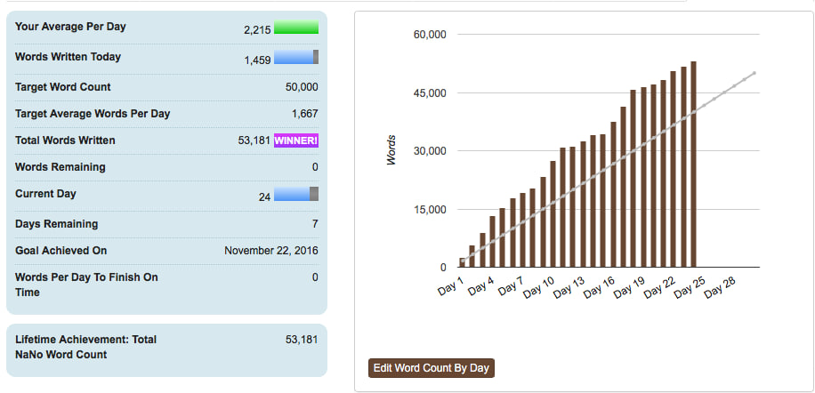

POSTED BY
DYLAN HEARN
DYLAN HEARN
POSTED ON
FEBRUARY 13, 2017
FEBRUARY 13, 2017
POSTED UNDER
UNCATEGORIZED
UNCATEGORIZED
COMMENTS
6 COMMENTS
6 COMMENTS
It’s been a while since I’ve posted (sorry, I’m still working hard on my next book) and
hadn’t planned to post but this piece from Terry on Rosie’s blog deserves to be spread far and wide.
If you are an author and you ask someone for their honest opinion of your work, don’t get upset
if they give it. Book bloggers are treasures. They should be encouraged, praised, and if possible
given red wine and chocolates. These wonderful people give up their time, for free, to review books.
And as every book is a piece of art, whether they like it or not is subjective (if you don’t believe me,
look up the one-star reviews on your favourite book). A well-thought out review is a gift, whether positive
or negative, and if you don’t think you can react well to somebody not liking your book, then you should
think long and hard about publishing it at all.
POSTED BY
DYLAN HEARN
DYLAN HEARN
POSTED ON
FEBRUARY 13, 2017
FEBRUARY 13, 2017
POSTED UNDER
UNCATEGORIZED
UNCATEGORIZED
COMMENTS
6 COMMENTS
6 COMMENTS

… me! I have to admit, I was a little dubious about NaNoWriMo before starting.
Yes, I saw the value of creating a community of like-minded individuals all
focussing on one goal, but at the same time 1667 words a day, while not a huge
amount on a single day, is a lot of writing day in, day out, for a month.From
a personal point of view, the month of November wasn’t exactly quiet. Along
with work and being there for my family, I’d also recently taken on learning
a set of songs for a duet, there was my oldest son’s tenth birthday split over
two weekends (as the birthday fell on a Wednesday) and I had committed to
starting a cricket coaching course at the end of the month, ruling out more
weekend writing time. Yet in the end, I did it and with more than a week to
spare! So what have I learned?
1 Having a deadline really spurs you on
I know I work well to deadlines with my job but this was the first self-imposed
deadline I’ve had for my writing and it really drove me on. By committing
publicly to delivering something I found I was planning my days better,
snatching the odd 30 minutes writing time when I could instead of sitting in
front of the box, and generally doing all I could – without upsetting my
family – to hit my goal.
2 I can write faster than I thought
When writing my first three novels, on a good day i could hit between 2000 to
2500 words. My best was just over 3000 words, yet there were a number of times
during the past month where I wrote well over 4000 words in a day. This may
have had something to do with the story itself, having a clear target or just
generally being more focussed, but when writing in the future my expectations
of what’s achievable has changed.
3 Not stopping to edit works
I’ve always been a believer of not looking back when writing your first draft
but this year I took it a step further than I’ve done in the past. Where I used
to correct the odd sentence or paragraph I was which I was particularly unhappy,
for NaNoWriMo I just left comments in red all over my MS on areas I felt needed
work or where I had a change of plan, but then carried on going. While this was
a great help to hit the word count, it will be interesting to see how the first
rewrite goes!
4 The joy of overwriting
One of my favourite discoveries during NaNoWriMo was how much fun over-writing
is. What do I mean by this? In my case it was allowing myself to describe settings
or characters in more detail than was needed, or to write far too much exposition
than would be in the final book. This is a big change for me. I usually write
sparingly and go back to add further detail later, but this time around
over-writing really helped me get under the skin of the world and the story I
created. I know a lot of what I’ve written will be (rightly) cut during the edit
but it has been fun letting myself go a allowing myself time to explore the people
and settings I’ve created.
5 I’ve been introduced to even more lovely writers
I’ve always maintained that one of the best things about writing is the supportive
community, and through NaNoWriMo I’ve got to meet a lot of new supportive and
encouraging writers. Sadly I haven’t been able to go to any meet ups but the
response on the NaNoWriMo regional message board has been really positive. Next
year I’ll definitely attend.
Of course, my first draft isn’t finished. I’m not sure whether I’ll hit my extended goal of finishing it by the end of the month but it will be really close and I can’t wait to then get my teeth into it and start editing in the new year.
So what about you? If you’ve taken part in NaNoWriMo this year, what has been your experience? If you haven’t, have I persuaded you to do it next year? I look forward to hearing from you.
Of course, my first draft isn’t finished. I’m not sure whether I’ll hit my extended goal of finishing it by the end of the month but it will be really close and I can’t wait to then get my teeth into it and start editing in the new year.
So what about you? If you’ve taken part in NaNoWriMo this year, what has been your experience? If you haven’t, have I persuaded you to do it next year? I look forward to hearing from you.